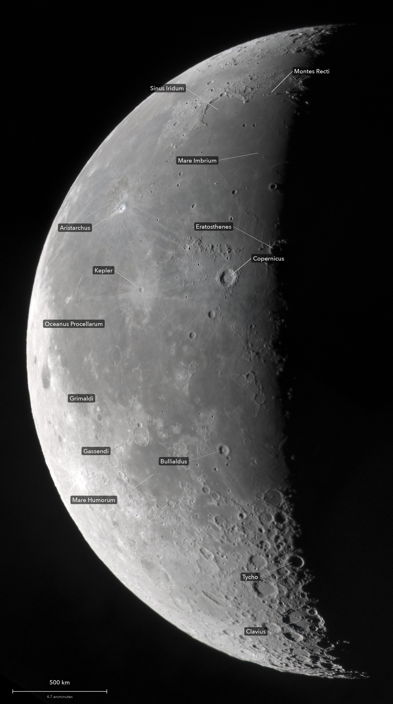

The Moon at last quarter
4 October 2026 · 41 percent lit
Along the line between day and night the Sun is setting, so every crater rim and mountain throws a long shadow. That is why the detail is richest there.
What you are looking at

Swipe sideways to see the rest. Tap the picture for full size.
- Distance
- 365,000 km, measured from its size in this picture
- Across
- 3,475 km
- Light took
- 1.2 seconds
- For scale
- Copernicus is 93 km wide; Clavius, 231 km
Technical detailsHow this picture was made: the equipment, the exposures and the processing.
© 2026 Brad Gessler · Celestron 8SE (8 inch, 2,080 mm) and Sony a6000 on an EQ6-R · San Francisco Bay Area · 4 October 2026
© 2026 Brad Gessler. The pictures and the words are his own; all rights reserved.